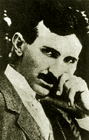

 Marele savant și inventator Nicolae Teslea (Nikola Tesla) s-a născut în noaptea de 9 spre 10 iulie 1856, ca fiu al preotului ortodox Milutin Teslea și al Gicai Mandici. Familia tatălui era de grăniceri antiotomani, în fostul imperiu austro-ungar.
Numele inițial de familie era Drăghici, dar el a fost înlocuit în timp, prin porecla de Teslea, după meseria transmisă în familie, de dulgher (teslari). Tatăl lui Nicu Teslea (Tesla) a mai avut un frate, Iosif, militar de carieră, care după absolvirea școlii de ofițeri a predat matematică în diferite școli militare, ca până la urmă să ajungă profesor la Academia de Război din Viena. Tatăl lui Teslea, inițial, și el elev la școala militară, și-a schimbat repede profesia, trecând la seminarul teologic, devenind preot ortodox în 1845, când s-a însurat cu Gica. Biserica în care a slujit inițial părintele Teslea se găsea în comuna Similian, la poalele munților Velebiti, acoperiți de păduri de stejar, fag și corn, în provincia Lica, cu centrul la Gospici, unde a fost transferat și părintele.
Henri Coandă îl prezintă pe marele inventator Tesla ca român bănățean din Banatul sârbesc, dar realitatea era că prietenul sau Nicolae era istro-român din Croația. Provincia Lica era locuita compact de istro-românii morlaci, încă din sec. XV-XVI. Gospici se afla la câțiva kilometri de țărmurile Marii Adriatice, iar satul Similian la 12 km de Gospici, satul fiind patria lui Tesla, Teslea, Tesla.
Preotul, om cult, se interesa cu precădere de literatură, filosofie, științe naturale și matematică. Încercarea de desnaționalizare i-a adunat pe morlaci sub stindardul bisericii ortodoxe.
Mama lui Teslea, Gica Mandici, româncă și ea după nume, a rămas - copilă fiind - orfană, și a trebuit să se ocupe de cei șase frați mai mici. Tatăl său a refuzat s-o trimită la o școală în limbă străina, dar ca autodidactă și-a completat cultura ca elevă a soțului ei. În casa preotului se strânsese, cum am văzut mai sus, o vasta bibliotecă din felurite domenii, mai mult științifice. Gica era vestită datorită frumoaselor broderii pe care le făcea.
Teslea a mai avut un frate, Dan, mort tânăr într-un accident, și trei surori: Anghelina, Milica și Marita, mezina pe care a iubit-o cel mai mult.
Despre familia Teslea s-ar putea povesti mult.
Nicolae, inventatorul, și-a făcut studiile la Karlovat și la Politehnica din Graz (1875-1881). Își începe celebrele descoperiri și invenții încă din 1881-1882 la Graz, la Budapesta, la Paris, în cadrul Companiei Edison (1882), Strasbourg (1884), după care pornește în vajnica odisee americană.
Când zici Nicolae Teslea (1856-1943), te gândești la istro-românul devenit cetățean american, omul de știință și inventatorul prolific în domeniul electro și radiotehnicii, descoperitorul câmpului magnetic învârtitor (simultan cu italianul Galileo Ferraris, 1847-1897). Tot el a inventat și sistemul bifazat de curent electric alternativ și a studiat curentul de înaltă frecvență. El a construit primele motoare asincrone bifazate, generatoarele electrice, transformatorul electric de înaltă frecvență etc. În atomistica, a cercetat fisiunea nucleelor atomice, cu ajutorul generatorului electrostatic de înaltă tensiune. Noi, românii, am uitat să-l comemoram la 140 de ani de la naștere, când Tesla a fost pomenit doar, într-o scurtă comunicare de 15 minute la Academie, de prof. N. Leonăchescu.
Invenția fenomenului "câmp electric învârtitor" se naște în 1882 la Budapesta, dar imediat, în baza unei recomandări, Teslea pleacă la Paris, unde este angajat la "Compania continentală Edison". Aici, modifică dinamo-mașina Edison. În cadrul aceleiași companii, construiește centrala electrică Strasbourg. Deși i se promiseseră 25.000 dolari la încheierea dificilei lucrări, a fost frustrat de gratificații. Unul din asistenții lui Edison, Charles Bechelore, îi propune să emigreze în America și îi dă o scrisoare de recomandare pentru Edison personal (1884). După unele peripeții (i s-au furat banii în gara Le Havre), se adresează proprietarului vasului, care îi înțelege situația (biletul și locul îi aparțineau, fiind nominalizat), și pe baza documentului de bord este primit și astfel, fără bilet, ajunge la New York, unde se prezintă la Edison. Este primit cu dificultăți și răceală, dar în baza recomandării scrise, este angajat în atelierele companiei, ca inginer-electrician pentru repararea motoarelor și generatoarelor de curent continuu Edison.
O situație neprevăzută îl face să se remarce în mod deosebit (1885). Transatlanticul Oregon, dotat cu generator Edison, care se defectase, trebuia să plece spre Europa la data fixă; avea toate locurile vândute și întârzierea le-ar fi adus armatorilor mari pagube. Firma lui Edison îl însărcinează pe Teslea să repare scurt-circuitul generatorului, cauza pe care o descoperă în spirele înfășurării bobinei și o remediază, rebobinând-o în 20 de ore. Edison îi promisese un premiu de 50.000 dolari dacă defecțiunea este îndepărtata în timp util plecării vasului la data prenotată. Nava pleacă la timp, dar promisiunea premiului se transformă în explicații: fusese o glumă. Nici alte gratificații promise, de exemplu pentru perfecționarea generatoarelor și motoarelor electrice Edison în 24 de variante, înzestrate cu un regulator și un nou tip de întrerupător, nu i se acordă. Edificat asupra conduitei lui Edison, Teslea va lucra de acum înainte pe cont propriu și va realiza definitivarea sistemului sau original, bazat pe curenți alternativi polifazați. Trecerea timpului îi dă dreptate lui Teslea în competiția sa cu Edison și treptat, teza sa privind curentul alternativ se impune.
Din primăvara lui 1885, mândrul Teslea refuză să mai colaboreze cu Edison și lucrează independent, înființându-și propria firma, "Tesla Arc Light Company".
Într-o discuție cu Henri Coandă, înregistrată pe magnetofon, marele savant mi-a declarat personal că îl cunoscuse pe Teslea: "Eu l-am cunoscut pe Teslea, când eram tânăr de tot, prin tatăl meu (Generalul Constantin Coandă - n.n.), care a fost întotdeauna lângă mine. Nicolae Teslea, care este inventatorul curentului electric alternativ, era român din Banat (era aromân - n.n.); e bănățean, și felul lui de a gândi și de a vedea, m-a frapat enorm de mult. El era cu patru luni mai tânăr față de tatăl meu, dar nu pot sa spun că nu am fost influențat și de el, pentru că felul lui de a vorbi și de a prezenta lucrurile erau așa de extraordinare încât, deși eram copil, n-am uitat. Vezi, unul din românii foarte importanți, care a schimbat poate toată viața omenirii, e un bănățean!...". Daca acum, să zicem 150 de ani, s-ar fi spus, ar fi venit cineva să ne spună cum spunea Teslea Nicolae, Teslea, românul din Banat: "Voi face lumină electrică, adică lumină, voi face asta mișcând o bucată de fier în fața unui fir de aramă," lumea l-ar fi închis ca nebun. Întâlnirea lui Coandă cu Teslea s-a petrecut în 1893, când Teslea se afla în țară, datorita morții mamei sale. Era deja celebru în lumea întreagă, în România însă mai puțin.
În noiembrie 1933, recent emigrat în SUA, Albert Einstein află de cercetările lui Tesla asupra fisiunii nucleare și caută să-l cunoască. Apropierea se face cu ajutorul unui tânăr reporter științific, Kenneth Sweasy, care se prezintă la Tesla cu o scrisoare de recomandare din partea lui Einstein. Teslea avea 75 de ani, în 1931, când primește scrisoarea lui Einstein. Cu prilejul sărbătoririi aniversării sale, el mărturisește că lucra la o nouă sursă de energie, informație care-l incită pe Einstein spre a-l cunoaște.
Teslea se ocupa de câmpurile gravitaționale (asemenea celui electromagnetic). Einstein ia cunoștința de articolul savantului roman din "Scientific American," bazat pe experiențele efectuate la instalația sa de la Institutul Tehnologic din Massachussetts (1934), pentru obținerea tensiunilor înalte, cu ajutorul unui generator Van den Graaf, destinat cercetării nucleului atomic.
La 13 martie 1885, un incendiu distruge laboratorul lui Teslea din New York. Flăcările mistuie toate instalațiile de telegrafie și întreaga aparatură pentru obținerea curenților de înaltă frecvență. Catastrofa îl lasă sărac la bătrânețe pe Teslea, fără mijloace financiare, dar savantul își recompensează secretarele care-l părăsesc, tăind în doua medalia de aur Edison pe care o primise. După ce incendiul laboratorului l-a lăsat în stradă (nefiind asigurat), Teslea s-a mutat într-o modestă cameră de hotel. Dar și în aceste condiții precare el își continuă cercetările.
În primăvara lui 1898, Teslea demonstrează public dirijarea prin radio, la mare distanță, a unui vas fără echipaj. Experiențele au fost efectuate în largul marii, în apropiere de New York.
În 1899, Teslea construiește la Colorado un mare post de radio, cu o putere de 200 kw, și realizează transmisii prin telegrafie fără fir, de peste 1000 km, face să se aprindă lămpile orașului de la distanță, obține tensiuni de 12 milioane de volți.
Edison și Teslea au fost propuși împreuna să împartă premiul Nobel pentru fizică pe 1915, ca unii ce-și închinaseră viața pentru descoperiri și realizări tehnice utile omenirii. Teslea a refuzat premiul, din cauza animozităților din trecut. Dar era în 1916, și premiul pe acel an nu a mai fost acordat, din cauza războiului mondial...
Nicolae Teslea moare la New York, în noaptea de 7-8 ianuarie 1943 și este înmormântat la 12 ianuarie. O covârșitoare personalitate care a marcat două secole prin geniul său.
PS. Îmi permit sa atrag atenția că în vreme ce lui Teslea, guvernul iugoslav i-a acordat o pensie viagera lunară pentru meritele sale, de 7500 dolari, deși lucra la "Massachussetts Institute of Tehnology," nu cunosc vreun om de știință român care să fi primit vreo pensie viageră de merit, din partea statului. În aceeași serie de nedreptăți, amintesc și faptul că în vreme ce la Belgrad există un mare muzeu tehnic "Nikola Tesla," la noi, fostul "Muzeu Coandă" din casa părintească a savantului a fost desființat, din dispoziția Elenei Ceaușescu. Cine are urechi de auzit?
Prof. univ. asoc. dr. ing. Dinu-Ștefan T. Moraru, membru titular al Academiei Oamenilor de știința din România
January 11, 1999
© 1999 Formula As